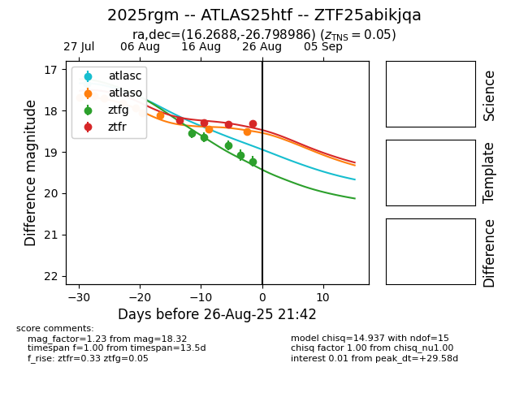

Target 2025rgm at 2025-08-26 17:42, see:
FINK: fink-portal.org/ZTF25abikjqa
Lasair: lasair-ztf.lsst.ac.uk/objects/ZTF25abikjqa
ALeRCE: alerce.online/object/ZTF25abikjqa
TNS: wis-tns.org/object/2025rgm
YSE: ziggy.ucolick.org/yse/transient_detail/2025rgm
alt names
ZTF25abikjqa (ztf,fink)
2025rgm (tns,yse)
ATLAS25htf (atlas)
coordinates:
equatorial (ra, dec) = (16.2688,-26.79899)
galactic (l, b) = (207.5225,-86.94364)
photometry
last atlasc=17.34, atlaso=18.50, ztfg=19.23, ztfr=18.32
1 atlasc, 9 atlaso, 5 ztfg, 4 ztfr detections
